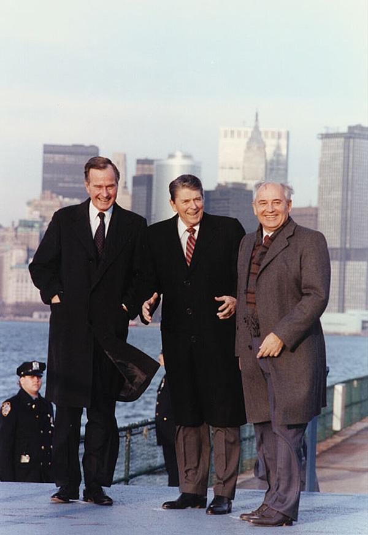
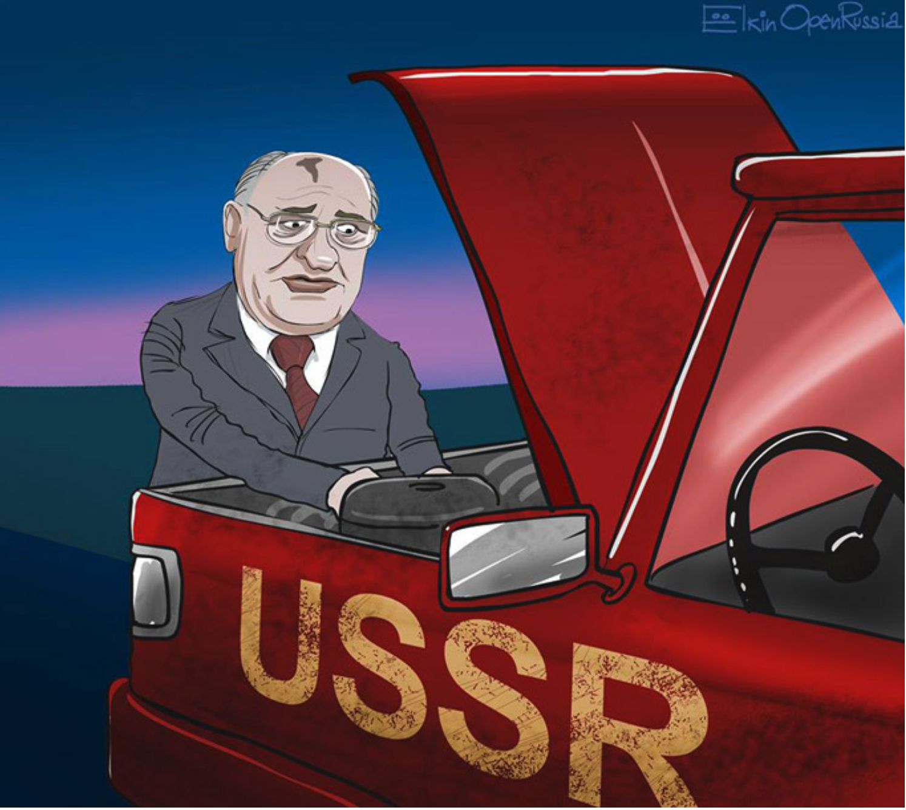

According to a political scientist Daniel Treisman, perestroika was an attempt to reform and preserve Soviet socialism, not to abolish it. Gorbachev's mistake was that he initiated economic and political reforms without anticipating how profoundly they would undermine the Communist Party's authority, the planned economy, and the cohesion of the Soviet Union. He intended to rescue the system but set in motion a process that ultimately destroyed it.

I like Treisman's argument. But I also would like to ask this question. Was the USSR destroyed by Gorbachev's reforms, or did those reforms expose contradictions that the Soviet system could no longer contain? Maybe Treisman gives Gorbachev too much credit. He just got a broken system that was about to collapse.
a concise version of Treisman's argument